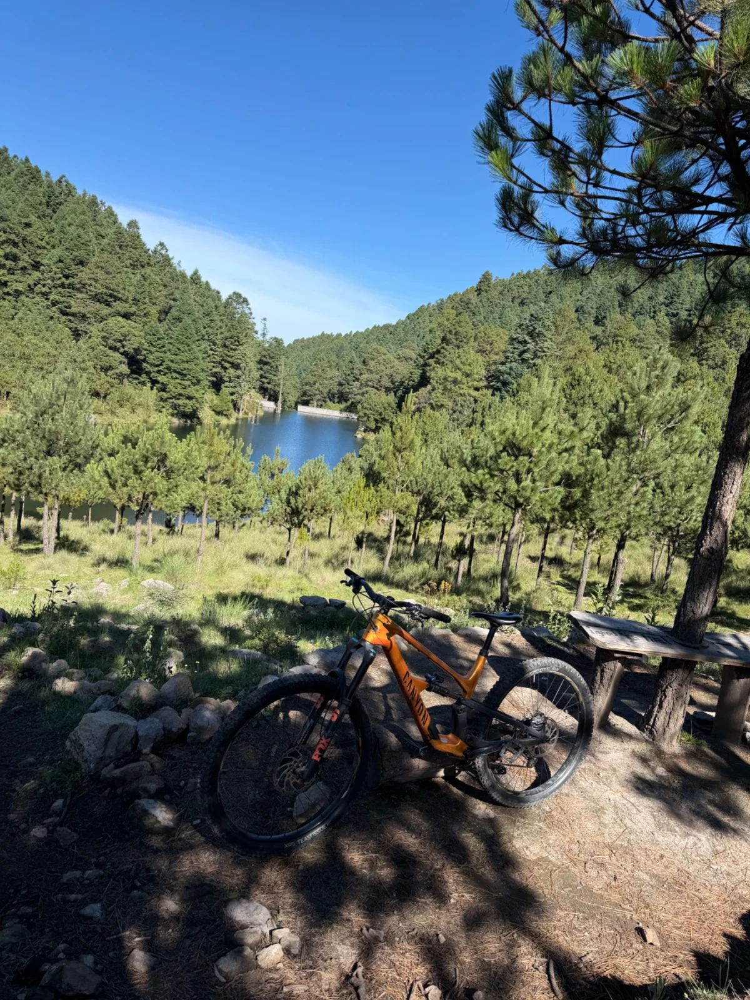
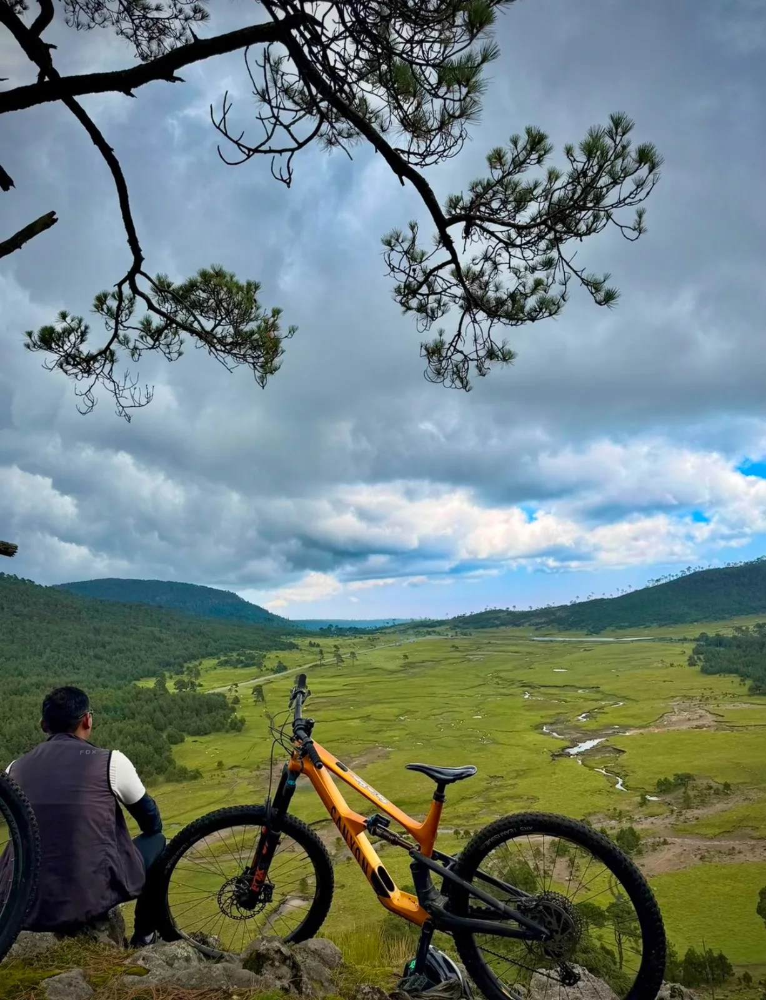
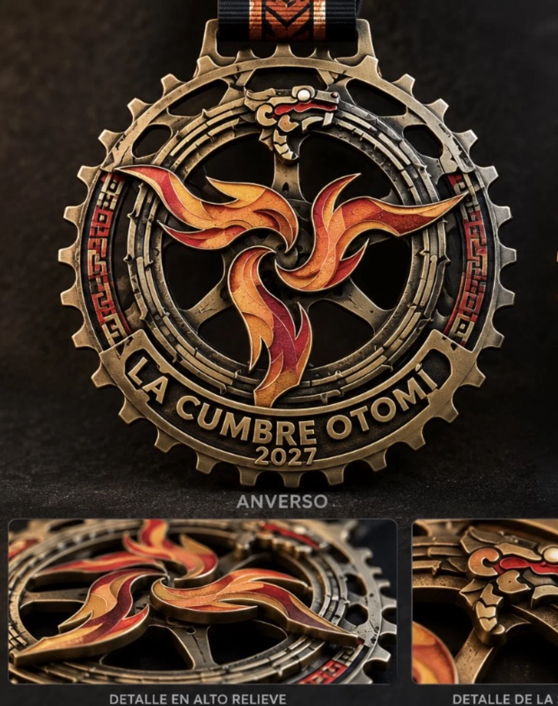
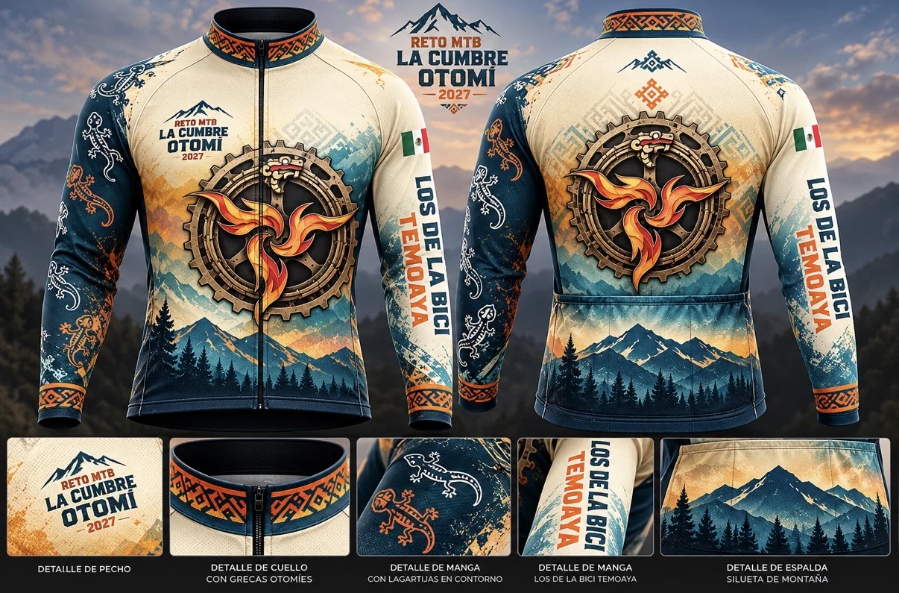
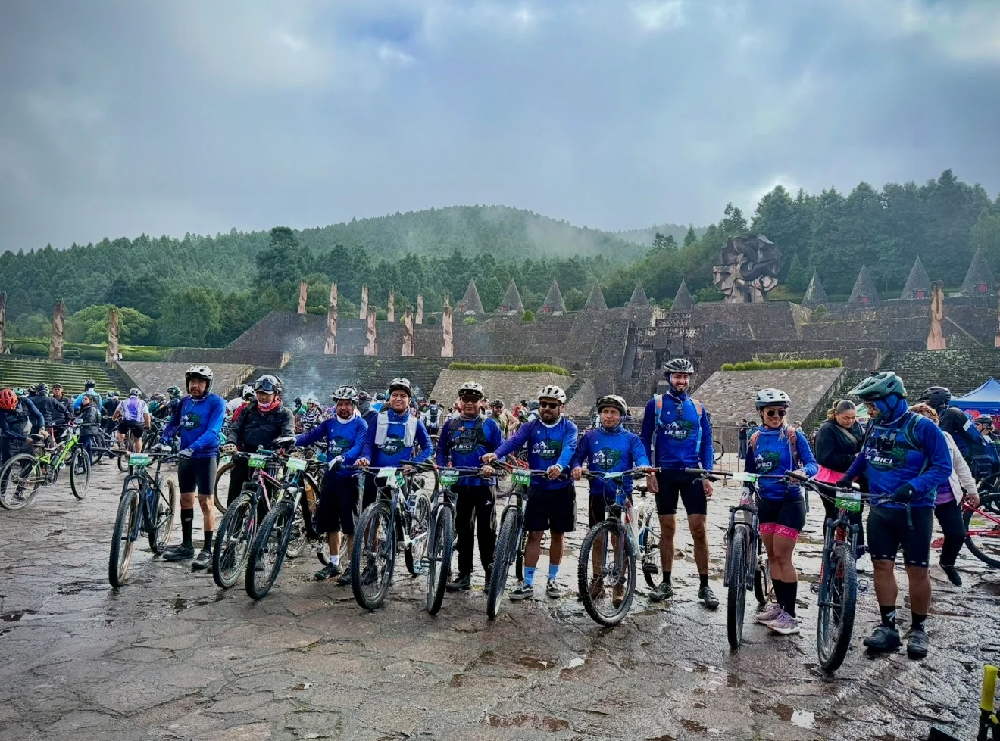

Principiantes e intermedios
Ruta corta
17 km
D+ 500 mAltitud máx. 3,200 msnmVaronil y femenil
Una ruta para disfrutar el entorno natural y poner a prueba tu resistencia.
Rutas que desafían. Paisajes que impresionan. Una experiencia que deja huella en las montañas de Temoaya.
Recorre paisajes de bosque y montaña en una jornada de ciclismo de altura.

Una ruta para disfrutar el entorno natural y poner a prueba tu resistencia.

El reto de mayor exigencia para quienes buscan competir en las alturas.
Se premiará a los cinco primeros lugares por categoría. Desliza las tablas horizontalmente en pantallas pequeñas.
| Rama | Categoría | Edad | Premiación |
|---|---|---|---|
| Varonil y femenil | Juvenil A | 12–14 años | 1.º a 5.º: premio en especie + reconocimiento |
| Varonil y femenil | Juvenil B | 15–17 años | 1.º a 5.º: premio en especie + reconocimiento |
| Varonil y femenil | Libre | 18–29 años | 1.º a 5.º: premio en especie + reconocimiento |
| Varonil y femenil | General | 30 años o más | 1.º a 5.º: premio en especie + reconocimiento |
| Rama | Categoría | Edad | 1.º | 2.º | 3.º | 4.º | 5.º |
|---|---|---|---|---|---|---|---|
| Varonil | Élite | 18+ | $3,000 | $2,000 | $1,000 | $700 | $500 |
| Varonil | Máster 30 | 30–39 | $1,000 | $700 | $500 | $300 | $200 |
| Varonil | Máster 40 | 40–49 | $1,000 | $700 | $500 | $300 | $200 |
| Varonil | Máster 50 | 50+ | $1,000 | $700 | $500 | $300 | $200 |
| Femenil | Élite | 18+ | $3,000 | $2,000 | $1,000 | $700 | $500 |
| Femenil | Libre | 18+ | $1,000 | $700 | $500 | $300 | $200 |
Bolsa total de premiación en efectivo: $25,200 MXN
Las categorías requieren un mínimo de 10 inscritos. Si no se alcanza, se integrarán conforme a las bases oficiales del evento. La participación de menores requiere autorización de su madre, padre o tutor.


Diseño con grecas otomíes, montañas y elementos culturales.
La sede estará ubicada a 200 metros del Centro Ceremonial Otomí, en Temoaya, Estado de México.

Montañas, caminos, cultura y la comunidad que hace posible el reto.
Del 5 de noviembre de 2026 al 15 de enero de 2027.
Selecciona tu ruta y tu kit. El enlace de registro se publicará aquí cuando esté disponible.
El registro en línea todavía no está habilitado. No se solicitan pagos ni datos personales desde esta página.
Próximamente conocerás a las marcas y organizaciones que apoyan esta aventura.